8.-Encuentro la medida de capacidad más adecuada para los siguientes objetos.
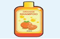
9.-Elija la cantidad de dinero mostrado en monedas
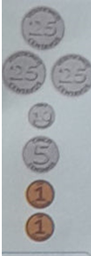
10.-Elija la cantidad de dinero mostrado en monedas
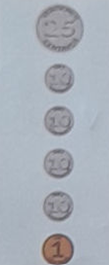
11.-Elijala cantidad de dinero mostrado en monedas
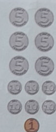
12.-Elija la cantidad de dinero mostrado en monedas
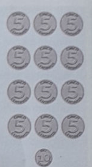
13.-Escribo la cantidad de dinero mostrado en monedas
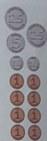
14.-Elija la cantidad de dinero mostrado en monedas
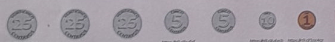
15.-Escoje los nombres de los ángulos.
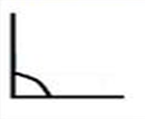
16.-Escoje los nombres de los ángulos.
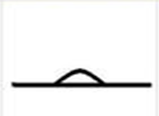
17.-Escoje los nombres de los ángulos.
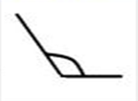
18.-Escoje los nombres de los ángulos.
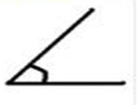
19.- Lea, analice y resuelva el problema matemático. Luego encierre el ítems correcto
Mónica compró 547 flores amarillas y su madrina le regaló 385 flores de color rojo, ¿cuántas flores tendrá en total Mónica?
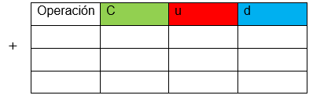
20.-Observa la siguiente imagen:
Cuál es la multiplicación representada en la imagen?
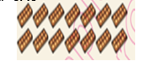
21.-Lea, analice y resuelva el problema matemático y encierre el ítems correcto
En el Coliseo se realizó una actividad infantil en la que acudieron 757 personas, de las cuáles solo pagaron entradas 385, ¿cuántas personas no pagaron entrada al coliseo para observar el espectáculo?
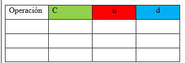
22.-Selecciona el resultado de la tabla del cinco en los cuadros correspondientes
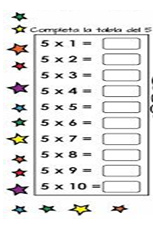
23.-Seleccione y lee los siguientes números.
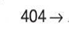
24.-Seleccione y lee los siguientes números.
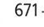
25.-Seleccione y lee los siguientes números.
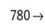
26.-Seleccione y lee los siguientes números.
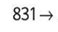
27.-Seleccione y lee los siguientes números.
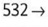
28.-Analiza el cuadro.
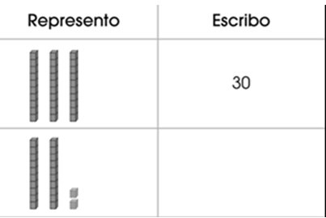
29.-Elija los resultados de las siguientes sumas y restas.
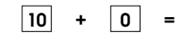
30.-Elija los resultados de las siguientes sumas.
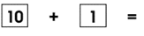
31.-Elija los resultados de las siguientes sumas y restas.
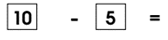
32.-Elija los resultados de las siguientes sumas y restas.
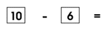
33.-Elije la figura que debe continuar.
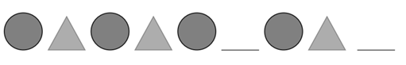
34.-Seleccione la cantidad de dinero mostrado en monedas
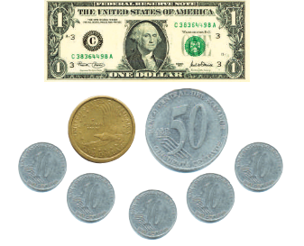
35.-Seleccione la cantidad de dinero mostrado en monedas
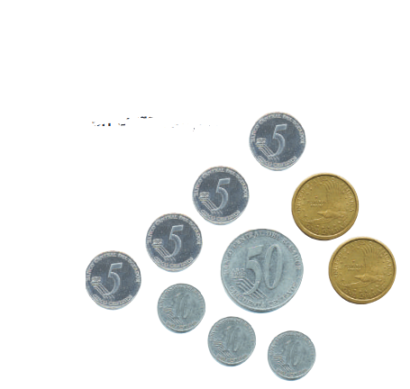
36.-Que numero falta 10, 20, __, 40
37.-Que numero viene despues del 99
37.-Si hay 7 dias en una semana, cuantos dias hay en 2 semanas
38.-Completo la serie descendente.
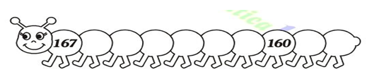
39.-Cual figura tiene 4 lados iguales
40.-Cuantos lados tiene un rectangulo
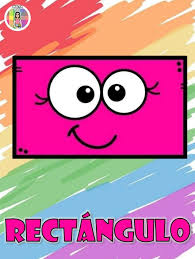
41.-Elije los nombres de las centenas puras
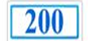
42.-Elije los nombres de las centenas puras
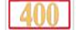
43.-Elije los nombres de las centenas puras
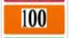
44.-Elije los nombres de las centenas puras
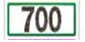
45.-Compara las cantidades y coloca el signo > o <
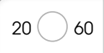
46.-Compara las cantidades y coloca el signo > o <
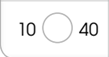
47.-Compara las cantidades y coloca el signo > o <
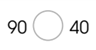
48.-Compara las cantidades y coloca el signo > o <
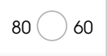
49.-Compara las cantidades y coloca el signo > o <
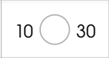
50.-Compara las cantidades y coloca el signo > o <